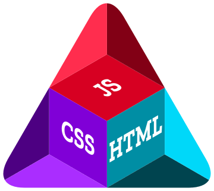

Najpopularniejsze języki
| Język | Link do opisu |
|---|---|
| Python page | Zobacz więcej |
| C++ page | Zobacz więcej |
| Java page | Zobacz więcej |
| C page | Zobacz więcej |
| C# page | Zobacz więcej |
| JavaScript page | Zobacz więcej |
| SQL page | Zobacz więcej |
| Go page | Zobacz więcej |
| Delphi/Object Pascal page | Zobacz więcej |
| Visual Basic page | Zobacz więcej |
| Fortran page | Zobacz więcej |
| Scratch page | Zobacz więcej |
| Rust page | Zobacz więcej |
| PHP page | Zobacz więcej |
| R page | Zobacz więcej |
| MATLAB page | Zobacz więcej |
| Assembly language page | Zobacz więcej |
| COBOL page | Zobacz więcej |
| Ruby page | Zobacz więcej |
| Prolog page | Zobacz więcej |
Kryteria oceny oraz mapa obrazka
- Wydajność
- Wsparcie społeczności
- Zastosowanie komercyjne
- Przenośność
- Łatwość nauki

Formularz zgłoszeniowy
Dlaczego warto programować?
Kliknij, aby przeczytać więcej
Programowanie to droga do wielu zdolności, często uznawanych za... nienaturalne.
Postęp wykonania zadania
Film edukacyjny
Prezentacja justify
Start
Start
Center
Center
End
End
Between
Between